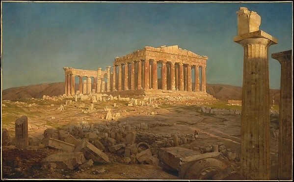

LESSON PROGRESS
0%

Optima Academy Online
An Education Experience Company
ENGLISH IV HONORS
Honors Project
Into the World
Spring semester
Lesson
1 of 8 · Enter a World
Q3, Weeks 1 to 2
You choose
A world, a role, an audience
About 45 minutes
Turn in
Your PDF
Assignment 1 in Canvas
🔊 READ ALOUD — LISTEN TO THIS PAGE

Enter a WorldEvery book you read this year came out of a real place where people were arguing. This spring you join one of those arguments.Frederic Edwin Church, The Parthenon, 1871. Oil on canvas. The Metropolitan Museum of Art, New York, 15.30.67. Public domain.
TODAY
Meet the project→
Meet ten worlds→
Choose one→
Decide who you are there→
Decide who you are talking to→
Download your PDF
Your last name
1
Into the World
Your honors project for the spring
●
You step into one world from a book you read this year. You take a public role there and work all spring to move a real audience toward something you can defend as wise. At the end you deliver the work to that audience and turn in a portfolio that shows how you built it.
1
A world
A place and time from this year's books, where people disagree
TODAY
2
A role
Someone people listen to
TODAY
3
An audience
Real people who could be moved
TODAY
4
A goal
What they should do, and why it is wise
LESSON 2
5
A medium
Vlog, podcast, feature article, imitation, or the Address
LESSON 2
LESSON 8
The Portfolio. Your finished work, delivered to your audience, with the research, the letter, and the logs behind it.
2
What you will be able to do
The four parts of your portfolio grade
25points
FIT
Choose a speaker, an audience, a goal, and a medium that work together, and answer what your audience already believes.
30points
ARGUMENT
Argue that your goal serves wisdom and human flourishing, using a framework from this year, and state the strongest objection fairly.
25points
RESEARCH
Research your world in primary sources and scholarship, write to a real expert, and say plainly what is documented and what you invented.
20points
CRAFT
Make and deliver a finished work in a public form, with a look and sound drawn from the world itself.
3
Who it is for
The one rule of the project
QUICK CHECK · NOT GRADED
Who is your work written for?
In your own words, what will you make this spring?
Two sentences. You have not chosen a world yet. Describe the project.
4
A world is not a book
A place, a time, and an argument
●
Athens argued about justice while Plato wrote. Geneva argued about the new science while Mary Shelley wrote. A book is what you read. A world is where its people live and quarrel, and you can stand there and speak.
QUICK CHECK · NOT GRADED
Which one could you enter?
5
Ten worlds
Open at least four. Read the question each one cannot settle.
Which two pulled at you, and why?
6
Choose your world
One world for the whole semester
●
Not the book you liked most. The argument you want to be inside for four months. Open a card and click Choose this world.
A world of your own? Name the text, the place, and the time. Your teacher approves it before this lesson is due.
7
Why this one
Two honest sentences
A MODEL, GENEVA
I want Geneva because its argument is mine. I make things, and I do not always ask who they are for.
I will have to learn how Geneva was governed in the 1790s. Right now all I know is the lake.
Why ?
What you do not know yet, and will have to learn
8
Where you stand
Inside the world, or looking at it from now
In the world
You live there. You speak to people of that time and place. You owe them the truth about their own world.
In the present
You speak today, to people alive now, about that world. You owe them the truth about the book and its history.
QUICK CHECK · NOT GRADED
A magistrate of Geneva addressing the council in 1795
A journalist today writing about a lab that races ahead of its own questions, with Frankenstein as her lens
9
Who you are
Someone people listen to
●
A magistrate. A lecturer. A journalist. An innkeeper everyone confides in. Never a student writing for a teacher. Click a seed to start, then make it yours.
Your role, in a phrase
Who you are, and why anyone listens to you
Your work, your place, your standing. Three sentences.
What you know that others do not
What you risk by speaking
Every real speaker risks something.
10
Who you are talking to
Real people who could be moved
●
Not everyone. Not your teacher. A group with a name, a number, and beliefs of its own. The council of Geneva: twenty-five men who fear disorder more than they fear a new science.
Your audience, with a rough number
What they already believe
Write it the way they would say it.
What they gain if you persuade them, and what they lose
What might move them
A fear, a hope, a fact, a story, a person they trust.
11
How well do you know them?
Pick the closest sentence
What you most need to find out about them
You may ask Claude to play your audience and object to you. Keep what rings true. Write your own words here, and note the exchange in your AI log when you start it in Lesson 3.
12
Your three choices, on one page
Download it. Every lesson from here builds on it.
EVERYTHING YOU WROTE TODAY
Review, copy, or download
BEFORE YOU TURN IT IN
Check each line
I chose one world, or proposed one for my teacher to approve.
I chose where I stand and wrote my role: who I am, what I know, what I risk.
I named a real audience with a number, and what they believe, gain, lose, and might be moved by.
I saved the PDF as LastName_ENG4H_Lesson1.pdf in my English IV Honors folder and uploaded it to Assignment 1.
Next. Lesson 2: what you want your audience to do, why that is wise, and how you will reach them. Today's answers will be waiting there.